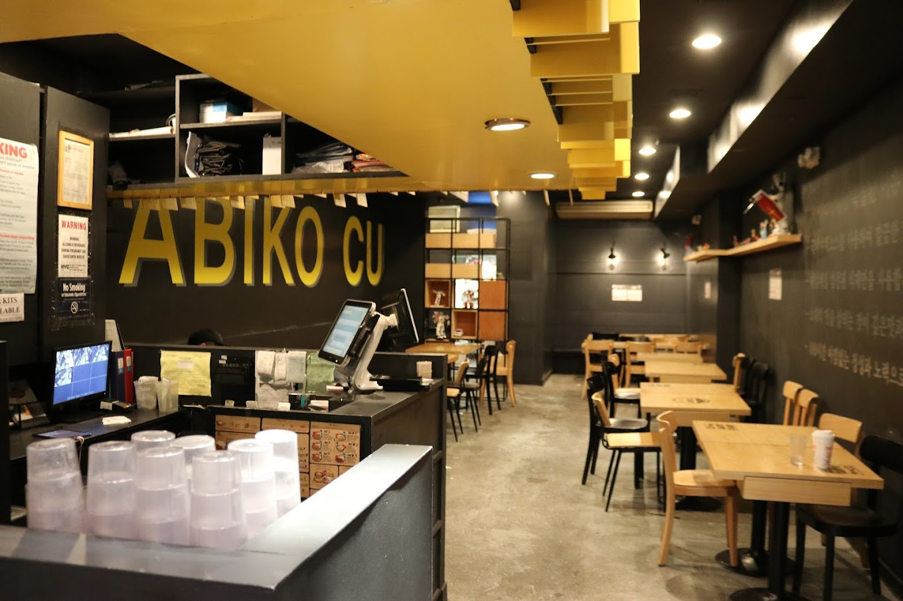
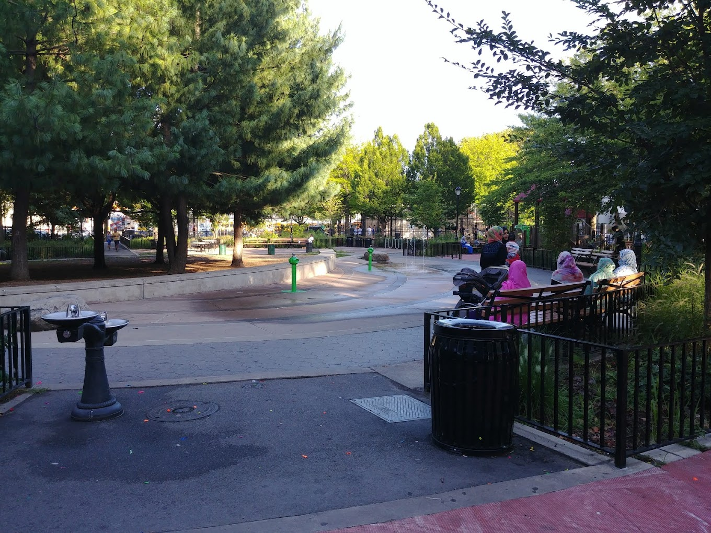

One of my favorite spots in NYC is Abiko Curry in K-Town. My older cousin introduced me and my younger cousin to it when we were 13 and 12. It became our go-to spot whenever we went shopping in Herald-Square. After my uncle's death last year, we started going there more often just to group up and talk about life. I'm pretty sure the waiters there recognize us by now.. The prices are really affordable and the food is 10/10!
Another one of my favorite spots in NYC is the Dome Playground on Dahill Road and 38th St. I've lived near it my whole life and played there every summer from afternoon to sunset with all the kids in the neighborhood. I'd ride my bike there in circles, play freeze tag, go under the sprinklers and bond with random kids I'd never meet again. I still go there for life talks with my cousins and to reminisce about our old memories here.
